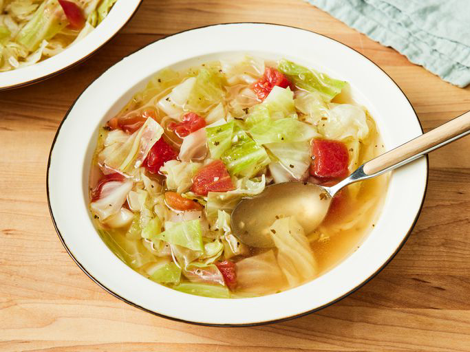

Healing Cabbage Soup

A delicious and hearty bowl of healing cabbage soup.
Ingredients:
- 3 tablespoons olive oil
- 1/2 of a chopped onion
- 2 garlic cloves, chopped
- 2 quarts water
- 4 teaspoons chicken bouillon granules
- 1 teaspoon salt
- 1/2 teaspoon black pepper
- 1/2 head cabbage, cored and coarsely chopped
- 1 (14.5 ounce) can Italian-style stewed tomatoes, drained and diced